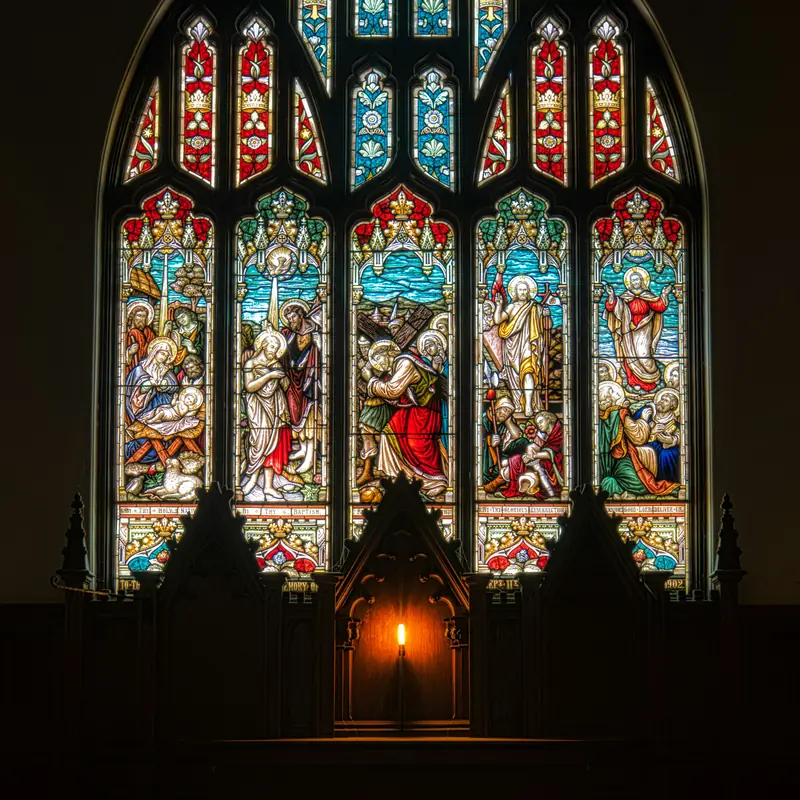

Get ordained online Officiate the wedding
It's free, it takes minutes, and it never expires. Join the 20 million+ people the Universal Life Church has ordained.
- Free, with no fees ever
- Recognized in nearly every state
- Never expires
20M+Ministers ordained
Famous ULC ministers
You'll be in good company.
Legally backedRecognized in nearly every state
Federal court · 2023Defended in Tennessee
Federal court · 2002Online ordination upheld
See the legal record →
How it works
From "will you officiate?" to "I now pronounce you."
Where is the wedding?
Every state has its own rules. We've done the homework.
Choose a state to see whether you need to register, which documents the clerk may ask for, and how to file the marriage license afterward.
What ordination lets you do
A calling for every sacred moment.

Weddings
Marry friends, family, or serve as a professional officiant.
Officiant guideBaptisms & blessings
Naming ceremonies, baptisms and home blessings.
Learn more
Funerals & memorials
Honor a life with a service that comforts the family.
Learn moreYour own ministry
Build a congregation or spiritual practice your way.
Learn more
Officiating soon?
Arrive with proof — and a certificate they'll treasure.
Most counties ask to see credentials. Here's what our ministers order.

Most popular
Classic Wedding Set
$48.99
- Credential + wallet license
- 3 marriage certificates
- "By the Power Vested in You" handbook
Wedding in < 10 days
Emergency Wedding Set
$43.99
- Credential of Ministry
- Notarized Letter of Good Standing
- FedEx Overnight, next business day
From our ministers
What ULC ministers say
★★★★★
Becoming an ordained minister was originally just an option to marry a couple of friends of mine. Now, I've performed the ceremony at my daughter's own wedding and about 13 others.Michael W.ULC minister · Google review
★★★★★
Excellent place to become ordained for performing weddings. Process was reasonably quick and efficient, and I highly recommend it.Michael F.ULC minister · Google review
★★★★★
I have been ordained for 7 years. I have been able to marry couples who may not have a church but have faith.Shannon S.ULC minister · Google review
Questions, answered
The short answers.
Still unsure? Read the full guide to how online ordination works or see why the ULC is legitimate.
Prefer to talk it through?
Our office answers questions about ordination, state rules and orders.
(206) 285-1086 · help@ulc.org
Is online ordination with the ULC legal?
Yes. ULC ordinations are recognized in nearly every U.S. state, and the ULC has defended its ministers in federal court. A few states and counties ask officiants to register or show proof of ordination first — our state guides list exactly what each one requires.
How much does it cost to get ordained?
Nothing. Ordination is free, there are no renewal fees, and it never expires. Printed credentials are optional and only needed if your county asks for proof.
How long does it take?
A few minutes. Fill out the short application and your ordination is recorded right away; a confirmation email follows.
Can I officiate a wedding for a friend or family member?
Yes — that is the most common reason people get ordained with the ULC.
Do I need to register with my state?
Most states do not require it. A handful (and some cities, such as New York City) do. Pick your state in our guide to see the exact steps.
Do I have to give up my current religion?
No. The ULC welcomes people of every faith and of no faith. We have two tenets: do that which is right, and respect everyone's right to practice their religion as they see fit.
Someone asked you to officiate. Say yes.
Get ordained free in a few minutes, then we'll walk you through every step.
Get Ordained Free →We are all children of the same universe